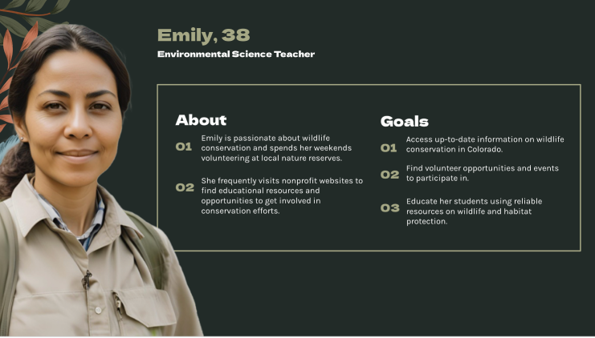

The Colorado Wildlife Federation Redesign
The CWF focuses on enriching and protecting the wildlife on the front range of Colorado. They are also highly active in education and awareness of the importance of taking care of the world around us.

Team Members
- Aubri Lander
- Kate
- Maggie
- Jamie
My Role as a UX Researcher
Design Thinking process, wireframing, iteration, testing, presentation.
The Process
Persona:

Research:


Prototyping:
Lo-Fi
Hi-Fi
User Testing:
Testing found that we needed to iterate our hamburger menu in the mobile design to make it cleaner and simpler. We also found that we had accidentally added a hover feature on the mobile design which isnt possible. We changed text over the images to make sure they complied with ADA standards.Overall, users liked the simplicity and pops of color. They also noticed the menu changed the architecture to make topics easier to find.
Final Prototype
Clickable Mobile and Desktop Prototype
Final Thoughts
Upgrading the CWF website has been a thorough and rewarding journey. We aimed to enhance the user experience and give the site a fresh, modern look. By carefully evaluating feedback and addressing issues like outdated information and tricky navigation, we've made significant improvements. Our new style guide brings consistency with updated colors, typography, and layout, making the site more engaging and easier to use. With the latest high-fidelity designs informed by user insights, we're excited to offer a website that better serves our visitors and supports the CWF's mission effectively.
If we were to continue: We would love to continue working on the virtual tours of parks and areas around Colorado